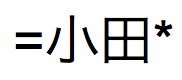
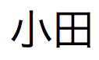
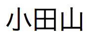
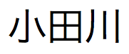
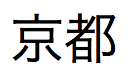
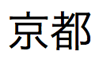
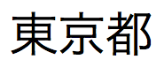
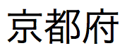
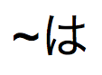
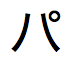

您可以在文本类型的字段中或在可返回文本结果的计算字段中搜索文本。
1. 开始查找请求。
请参阅创建查找请求。
要查找 | 在字段中输入 | 示例 |
以特定罗马字符开头的词（可以处理除日语和中文之外的任何其他语言的字段） | 字符 |
|
以日语平假名、片假名或日本语汉字开头的单词 | 要查找的字符（位于 |  查找 、 和  |
短语或字符序列，作为字词中的前几个字符时匹配（从字词开始匹配短语） | 文字文本（字符），包括空格和标点，位于双引号 ( |
"
|
查找以一个或多个未知或可变字符（任一字符）开头的字词 | 一个通配符 ( |
|
文本字段中的无效字符 |
| 无效字符显示为空白字符
注释 要查找 ? 字符，请搜索 |
文本字段中的数字（任一数字） | 一个 |
|
在行中查找不具有或具有多个未知或可变文本字符的字词（零或更多字符） |
|
|
运算符或其他非字母数字字符，如标点或空格 | 文字文本（字符），包括空格和标点，位于双引号 ( |
|
具有特殊含义的字符，例如不可见字符或由 FileMaker Pro Advanced 识别的查找运算符： @、*、#、?、!、=、<、>、"（忽略下一个字符） | 在要查找的特殊字符前面加上 针对回车，在浏览模式下在字段中输入回车并将其拷贝到剪贴板。然后在查找模式下，键入 针对选项卡，键入 |
|
带有重音字符的单词 | 文字文本（字符），包括空格和标点，位于双引号 ( |
（不带引号的 |
部分短语（词或字符序列，从任意位置开始的匹配短语） | 双引号 ( |
"Johnson & Phillips"和"Paulson & Phillips" |
查找您所指定的文本的完全匹配项（全字段匹配） |
|
|
查找您所指定的整个词的完全匹配项（全字匹配） |
|
|
包含日语平假名、片假名和日语汉字字符的单词（仅限日文索引的字段） | 字符 |  查找 、 和  |
日文索引字段中的假名字符，不区分平假名/片假名、浊音/半浊音/清音假名、小/普通假名和假名浊音/清音叠字符号 |
|  查找 、、、、 和  |
2. 单击状态工具栏中的"执行查找"。
注释 通常，查找不区分大小写或半角/全角。例如，包括日语半角字符的查找请求会匹配包含等价的全角字符的结果。
通过将字段的默认索引和排序语言更改为 Unicode，您可以在字段上执行区分大小写和区分半角/全角的查找。不过，此过程会更改字段排序的顺序。如果不想以 Unicode 顺序对原始字段排序，请创建计算字段（其公式就是要在其中执行区分大小写或区分半角/全角的查找的字段），并将此字段的默认索引和排序语言更改为 Unicode。然后，可以对其中一个字段进行排序，并在其他字段上执行查找请求。请参阅定义字段索引选项和定义计算字段。